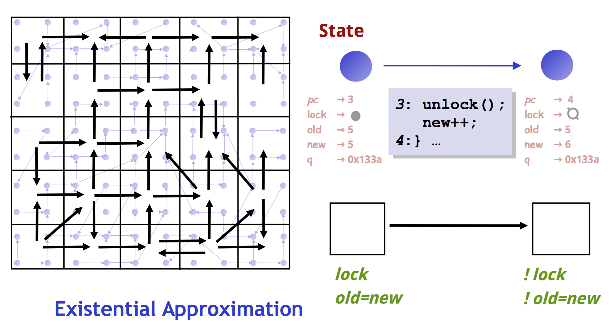

Predicate Abstraction? 那是什么？能吃吗？我曾经被它的标题欺骗过，以为它是那种把几个predicate抽象成一个，然后一个过了，大家就都过了 的这种意思.. 我还是太年轻啊
注：以下皆为一家之言，本人才疏学浅，如有错误，在所难免，敬请指正！
Update [06/23/2015]: 看了篇关于在relaxed memory model下的predicate abstraction之后补充了最后一个section “最后再说几句”。
Why
// Predicate Abstraction被“发明”出来是做啥用的？它能解决什么问题？
首先，Predicate Abstraction也是Abstract Interpretation的一种，信息源看这里:
Predicate abstraction [61] can be used to reduce any static analysis on a finite abstract domain to boolean fixpoint computations as performed by a model-checker using a theorem prover to automatically derive the abstract transformers involved in the fixpoint definition. Parametric predicate abstraction is an extension to infinite abstract domains [20].
至于Abstract Interpretation是什么.. 说来话长啊！时隔一年半之后我终于写了一篇相关的博文…. 这里简单描述一下我的理解：
1 | abstract states <--> abstract states |
原本在concrete states之间做的操作，可能因为数目实在太多而顾不过来(intractable)，但是如果能将一些concrete states map to abstract states, 然后在abstract state的级别进行对应的操作，那么整个东西就变的tractable了！
Model Checking就是要explore whole state space, 然后要嘛验证整个东西都是对的，要嘛返回一个反例说哪里会出错。至于Model Checking是什么.. 说来话长，它也在我的写作列表里了！
制约Model Checking实用性的是state explosion problem, 即如果要遍历所有concrete states, 可能直到宇宙尽头都做不完！所以Model Checking一般都是在abstract states上遍历complete state space的。
而Predicate Abstraction就是这样一种能够将concrete states变成abstract states的方法！当然，predicate abstraction不仅仅可以用在model checking上，但是我毕竟不是专精这个的，我看到的paper里是只说了model checking的。
Application
// 那么真的有人应用Predicate Abstraction吗？
有的，根据课件上说，
- SLAM (used in windows device driver verification)
- MAGIC
- BLAST
- F-Soft
都应用了Predicate Abstraction的技术。
在之后的文章里，我会结合着SLAM中的应用一起说，主要来自这篇paper - Automatic Predicate Abstraction of C Programs. 因为我要做个课上的presentation, 就是关于这篇paper的.. 我的slides在这里
一句话总结，那篇paper的主要贡献在于，它第一次把Predicate Abstraction真正应用到一个业界常用的语言中——C.
这篇paper发表于2001年（天哪我还在上四、五年级..）的PLDI, 所以下边都用PLDI’01指代
How
// 那么，Predicate Abstraction具体是怎么做的呢？
一句话概括：Predicate Abstraction能把original program变成一个boolean program.
那么这样好在哪里呢？原本要track x = 1? 2? 3? .. n? 这样的具体数值，现在只需要track x>0? 这样一个predicate, 概括能力点赞！更具体一点的说，原本对于一个32位的int, 变成bit-vector logic交给SAT solver的话，是track all 32 bits的，而对应的boolean program交给SAT solver的话只有一个bit!!
注：SAT Solver是什么：给定一个logic formula, 返回是否这个formula是satisfiable的，即找得到一组值使得整个formula为true.
注：Bit-vector logic是什么：在机器中，数值是有位数限制的，所以数学上成立的formula在遇到可能的overflow的时候也许就不成立了。Bit-vector logic就是考虑了位数限制的情况。
至于这俩更加具体的描述，应该在之后写到symbolic execution & model checking的时候会多写一点（吧）。
Demo
首先来看一个demo, 假设original program是这样的：
1 | int main() { |
经过Predicate Abstraction生成的boolean program可能会是这样的：
1 | void main() { |
看看前后代码的区别：
- 之前的变量i不在掉了，变成了新的boolean variables. 这几个p1, p2其实就是做Predicate Abstraction所给定的那些个predicates, 这里
* p1: i = 0
* p2: even(i)
而如果给定的是其它的predicate, 那么生成可能就是其它的boolean program了
- 既然之前的变量被替换成了boolean variable, 那么之前针对旧variable的赋值语句也要被修改成相应的针对新的boolean variable的赋值语句：
1
2
3
4
i = 0;
==>
p1 = TRUE;
p2 = TRUE;
- 其实在PLDI’01中，while(..) 和 if(..) 都会被替换成
1
2
3
4
5
if(*) {
assume(p)
} else {
assume(¬p)
}
这样的形式。不过这个小例子里没有这么做
Definition
生成的boolean program是原先的program的”abstraction”. 毕竟名字里就是这么叫的.. 所谓abstraction, 在PLDI’01 paper里是这么描述的：
BP(P,E) is guaranteed to be an abstraction of P in that the set of execution traces of BP(P,E) is a superset of the set of execution traces of P.
即只要在C program中可能的path/trace, 在新的abstraction中也一定是可能的，superset. 所以Predicate Abstraction是over-approximation.
和”Over-approximation”相对的叫做”under-approximation”. 对于这俩我的理解如下图所示：
1 | ------------- ← Over-approximation |
假设中间的那个圈包含了所有真正的concrete states. 那么over-approximation就是be more general, 多涵盖了一些额外的states; under-approximation就是只涵盖了其中的一部分states. 具体使用如下：
- 如果over-approximation都对了，那么actual一定是对的！
- 即使over-approximation出错了，actual不一定有错，有可能是spurious counter-example (所以需要对这个反例进行具体分析看看到底是真是假，然后进一步refine再来一遍，这就是CEGAR的思路)
- 如果under-approximation都错了，那么actual一定是错的！
- 如果under-approximation对了，actual不一定都是对的
我的感觉是over-approximation更常见，毕竟涵盖的states多了，总体所需要的abstract state就少了，在abstract state上explore full state space就更容易了
那么问题来了，挖掘机，啊不，如何确定这样用来决定boolean variable的predicate呢？在确定predicate之后又要如何transform, 计算abstracted boolean program呢？
How to determine such predicates
要说如何决定这样的predicate, 我就要说到大名鼎鼎的CEGAR了！我就直接用上课的课件上的这幅图好了：

解说：
- 给定要测的c program,
- 先通过某种初始abstraction方法把它变成abstracted的代码，然后交给Model checker,
- 如果model checker说没有问题么么哒，那么原本的c program就是没问题的；
- 如果model checker报了一个反例，就去具体看一下，因为这个反例是在abstracted domain下的，真正的代码里可能没有这个问题，
- 如果真的是个问题，就说明这个abstraction方法不够准确，需要对abstraction方法进行优化(refine), 然后用新的abstraction方法从头再来一遍
下图是一个具体的实例，也是来自上课的课件. 只看左半边就好了。

里头那个淡蓝色的小点代表的是concrete state. 淡蓝色小点之间的箭头表示真正可能的transition. 黑色格子区分出来的是一个个abstract state, 可以看到每个abstract state基本都涵盖了几个concrete states. 黑色箭头代表着abstract domain下的transition.
黑色箭头是怎么确定的呢？这里是”existential approximation”, 即只要黑色方格内有一个concrete state能够跳转到另一个方格内，这俩黑色方格之间就能有一条黑色箭头。显然，这是over-approximation. 对应的under-approximation可以是要求方格内所有states都有到另一个方格的transition的话，才能有一个对应的黑色箭头。
这个把小点点变成黑色大格子的过程，就是一个把infinite state space变成finite state space的过程。所以从intractable变成tractable.
但是显然，这样是会有spurious counter-example的嘛，比如按照黑色箭头，是能够从最左下角跑到最右上角的，但是按照真正的蓝色小点，是没法的。所以在判断出这是一个spurious example之后，可以根据其中inconsistent的部分，把不同的states分的更精细，比如下边这样：(还是只看左半边)

变成更加精细的小格子之后，原本的spurious counter-example就消失了。
How to compute the abstract boolean program
按照slides & PLDI’01 paper中的介绍，是有用到weakest precondition来生成新的赋值语句，生成abstract boolean program的
我来介绍背景知识，什么是weakest precondition (wp, 又简写作wlp, for weakest liberal precondition). 首先，需要介绍Hoare Logic / Hoare Triple.
1 | {P} |
这是一个Hoare Triple, P和Q都是predicate, 它们像是一个所有满足这个predicate条件的state集合。这个triple的意思是：
- 如果 pre-state ⊨ P
- pre-state在执行command c之后变成post-state
- 那么 post-state ⊨ Q
这里的 ⊨ 在PL的paper里会经常见到，表示semantically true. state ⊨ P 表示P is true on this state.
说到wp, “weakest”的含义在于：
1 | ∀ P, |
这几行的意思是，对于任何满足这个Hoare Triple的P来说，P总能推出wp(c, Q), 所以称作weakest precondition.
wp(c, Q)是所有可能的P的一个”总结/概括”。然后，wp(c, Q)是可以直接计算的，对于赋值语句
1 | x := e |
来说，它的wp是这样的：
1 | { Q[e/x] } x := e { Q } |
即，它的wp是把post-condition Q中的x替换成e. 这里的notation “e/x”, 是约定俗成，把它看成用e把x推走，会好记一点 XD
背景介绍完毕，那么这个wp在predicate abstraction中具体怎么应用呢？Since每一个predicate其实都可以作为post-condition / pre-condition:
1 | x := ctr; |
对于上边这4行代码，首先我们知道这俩assume不应该同时满足。这里predicates显然可以直接采用俩assume里的东西：
1 | bool b0 : y != i; |
所以，首先代码会变成这样：
1 | ? |
然后
1 | wp(y := ctr + 1, y != i) |
即只要 ctr + 1 != i, 在执行完 y := ctr + 1 这行语句之后，就一定会满足 y != i 的条件。于是我们可以把这里写成：
1 | ? |
因为这里如果是计算b1的话：
1 | wp(y := ctr + 1, x == i-1) |
仍旧不变，所以b1不需要在这里重新赋值
同理，可以计算出第一行应有的语句：
1 | b1 := b3; // b3 : ctr == i - 1 |
这是生成好的boolean program, 然后初始的条件只有b2 & b3两个了，现在再做model checking的话就只需要遍历 b2两种情况 * b3两种情况 了！比原本把int32所有值explore一遍的最坏情况是不是快了很多很多！
Notes of PLDI’01 paper
以下是那篇PLDI’01 paper的笔记，我在课上也做了个这篇paper的presentation.
这篇不是第一篇讲Predicate Abstraction的paper, 但是是第一篇将Predicate Abstraction用在model checking real software的paper. 所谓”real”是说像C这样的业界常用语言..
这篇paper主要给出的是C2BP这个工具，它的主要功能就是给定C program, 以及predicate set, 输出一个abstraction (boolean program).
This abstraction is represented as a boolean program BP(P,E), which is a program that has identical control structure to P but contains only boolean variables.
C2BP自己其实只是处理给定的predicates, 至于怎么自动生成/refine predicates, 就是作者们的另外一个工具NEWTON做的事情了
C2BP被用在了MSR的SLAM toolkit中，用于检测temporal safety properties of Windows NT device drivers.
他们声称C2BP is sound & precise. Soundness其实就是说在源program中可行的东西，在boolean program中也一定可以找到。至于preciseness, 似乎是用另外一个abstract interpretation的framework去描述的，paper里没有细说
至少在这篇paper里，C2BP只能用于single-thread.
在C2BP生成了一个boolean program之后，这个output就被作为另一个工具BEBOP的input, 去做model checking了。BEBOP是一个symbolic model checker, 专为boolean programs定制..
BEBOP performs interprocedural dataflow analysis using binary decision diagrams.
Challenges of Predicate Abstraction for C
这是第一次应用到C上，所以肯定得处理一些C带来的额外的问题。以下是paper中列出来并且描述了的几个challenge:
- Unknown Values
说C中有些效果都很难确定，所以干脆就用一个 * 来表示non-deterministic的效果，如
1
2
if (*) { assume(...) }
else { assume(...) }
- Precision-efficiency tradeoff
根据paper里的描述，C2BP的大部分时间都耗在theorem proving的调用上了，所以他们想了几个优化来减少theorem prover的调用次数，如
1. 假设一个formula已经能够imply φ了，那么包含这个formula的一个更大的formula也一定能够imply φ, 所以就不用再去算一遍大的formula了。这个有点像Separation logic里的frame rule呀
2. 只有在boolean variable经过赋值后值会改变的情况下，才去真正更新
3. 在不改变效力的情况下，用更少数目的boolean variables.
4. 用一些syntactic heuristics.
5. ......
Pointers 见下文
Procedures & Procedure Calls 见下文
Challenge - Pointers
为什么指针是个问题呢？回到之前的wp, 对于赋值语句来说，其wp rule是：
1 | { Q[e/x] } |
但是在有pointer的情况下，这rule就不一定正确了！！如：
1 | wp(x := 3, *p > 5) |
按照原本的rule, 计算结果应该还是 *p > 5, 因为x没有出现在predicate中。但是what if p是x的指针呢？！
paper里介绍的解决方案很直白，分类讨论：
1 | φ[x, e, y] = (&x = &y /\ φ[e/y]) |
就是当x和y地址相同的时候，那么就同时更新一下y; 若x和y地址不相同，那么就啥都不用动。
因为这个，C2BP也要求C program中不要有multiple dereferences (e.g. **p). 这个很好做到，多预处理一次就好了。
但是！在最坏情况下，这个wp的计算将有2^k syntactic disjuncts, 会是exponential的！！所以C2BP也采用了pointer analysis来缓解这个情况。当能够确定俩肯定不是alias的时候，就可以仍旧使用初始的assignment wp rule了。
Challenge - Procedures & Procedure Calls
函数调用在有指针存在的时候也是有问题的，因为可能函数内部通过指针修改了某些内容，那部分东西也应该被记录下来
paper中对于这部分的处理是modular的，可以一个函数一个函数来。执行2个pass, 第一次每个函数被abstract成一个procedure signature; 第二次对于每个函数，有了它调用的所有函数的signatures就足够做后边的事情了
A signature of a procedure R is: (R’ is its boolean program)
- F_R, the set of formal parameters of R
- r, the return variable of R
- E_f, the set of formal parameter predicates of R’.
- E_r, the set of return predicates of R’
①是函数参数；②是函数返回值；③④按我的理解，是忽略了那些R’中涉及到local variables的部分，毕竟caller不需要关心这个。
有了这个signature之后，假设一个函数调用是”v = R(a1, .. aj)”这个样子的，所有可能被修改的boolean variable都要做相应的更新，比如v, 比如signature中可能会提到的某个global variable, 比如signature中可能会提到的对某个传进去的指针的取值，etc.
// 好吧我承认，对于函数这里也没有完全理解.. >_<
最后再说几句（06/23/2015）
Standard/Traditional Predicate Abstraction只是考虑了sequential consistency的。在relaxed memory model是unsound的（很多东西加上relaxed memory model之后都有问题，╮(╯_╰)╭）
关于relaxed memory model是什么，呃.. 推荐看Shared Memory Consistency Models: A Tutorial这篇paper, 我也有打算写出我自己的理解/介绍，但是要填的坑太多了最近补不上 O.O
关于Predicate Abstraction在relaxed memory model下要怎么做，也许可以看这篇Predicate Abstraction for Relaxed Memory Models, 我也只看了这篇.. 引用里还有其它的。
就酱。
□